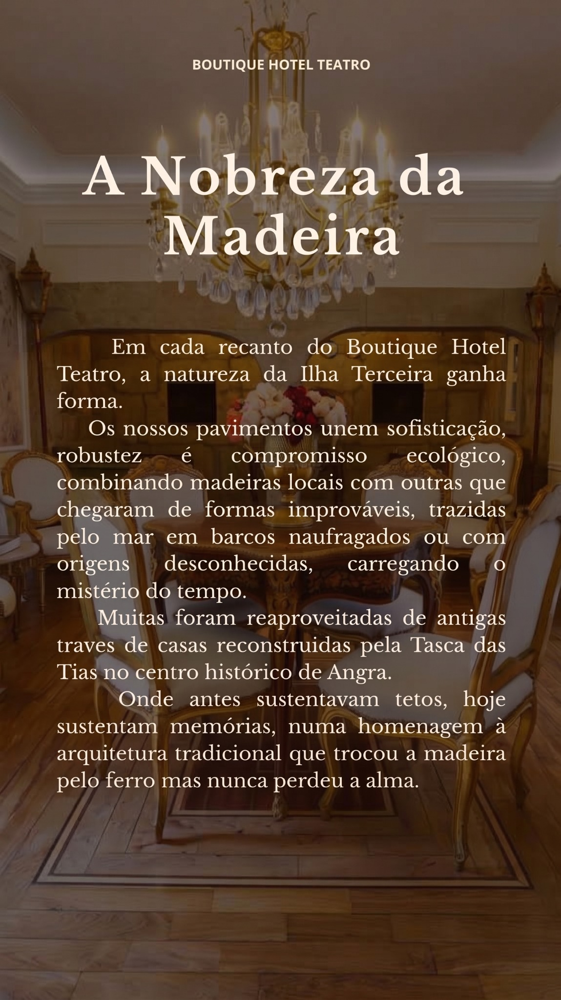
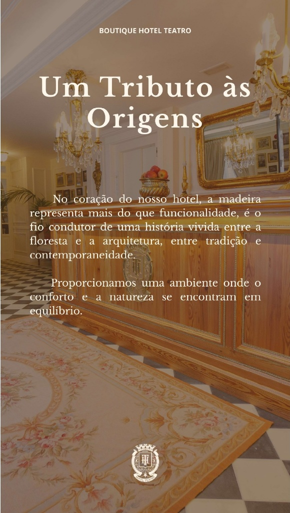

“Entre pedra, madeira, fotografias e objetos que resistiram ao tempo, o Boutique Hotel Teatro convida-o a descobrir uma história que continua a ser escrita.”
Séculos de história
numa só casa
Segundo a informação histórica associada ao edifício, a casa que hoje acolhe o Boutique Hotel Teatro remonta ao século XII. Desde então, atravessou séculos de mudanças, diferentes épocas e funções, guardando nas suas paredes marcas de quem por aqui passou.
Em 2024, a casa ganhou uma nova vida como Boutique Hotel Teatro, num projeto que procurou estabelecer um diálogo entre passado e presente, preservando características arquitetónicas e elementos originais.
A apresentação histórica do hotel refere a preservação de elementos arquitetónicos originais e a transformação do edifício em 2024.

António Sieuve
de Séguier
Existe uma possibilidade histórica, preservada na memória do hotel, de esta ter sido a casa de António Sieuve de Séguier, apontado como o primeiro Cônsul de França nos Açores.
Num período em que Angra assumia um papel importante nas rotas atlânticas, a casa estaria inserida num contexto de circulação de pessoas, mercadorias, ideias e culturas.
Não sabemos hoje, com absoluta certeza, tudo o que estas paredes testemunharam. A possibilidade de António Sieuve de Séguier ter aqui vivido acrescenta uma nova camada à história desta casa.
A memória preservada pelo hotel associa o edifício a António Sieuve de Séguier e identifica-o como primeiro Cônsul de França nos Açores.

Memorial dos Ilhéus
das Cabras
Há lugares que pertencem à paisagem e, ao mesmo tempo, à memória mais profunda de uma ilha. Ao largo da costa sudeste de Angra do Heroísmo erguem-se dois imponentes blocos de pedra vulcânica vulgarmente conhecidos como Ilhéus das Cabras — embora a memória documental preserve o seu presuntivo e verdadeiro nome: Os Ilhéus do Coronel Canto.
Moldados pelas vagas e pelo tempo, estes ilhéus foram durante muitas décadas uma pastagem natural exclusiva para rebanhos de ovelhas. É precisamente nesta paisagem que se cruzam as raízes da nossa casa: os antepassados da família fundadora do hotel eram produtores e criadores de gado ovino, dedicados à arte e à extração da lã.
No Boutique Hotel Teatro, mantemos vivo este testemunho. Conservamos no espaço repletos instrumentos de valor histórico inestimável que pertenceram a esse trabalho quotidiano, entre os quais a balança original de pesar a lã e as tesouras manuais de ferro utilizadas na tosquia.

O Fio entre Ilhas e a Colcha Ancestral
O expoente máximo desta memória é a nossa colcha tradicional: um tesouro de família antiquíssimo que traduz a ligação umbilical entre duas ilhas açorianas. A lã pura tosquiada e fiada na Terceira viajava pelo canal até São Jorge, onde mestras tecedeiras a trabalhavam pacientemente em teares manuais.
Em São Jorge, a lã era tingida exclusivamente através de técnicas e pigmentos vegetais da flora local. O tom rosa e violáceo que ainda hoje se admira resulta da urzela (Roccella tinctoria), um líquen colhido nas falésias rochosas à beira-mar. Uma relíquia que guarda em cada fio o labor e a alma dos nossos antepassados.


A lareira em forma
de “mãos postas”
Entre a pedra e a arquitetura, há detalhes que pedem para ser descobertos: a lareira em forma de “mãos postas”.
Encontra-se na Sala dos Fornos e tornou-se parte da identidade deste espaço. Uma solução arquitetónica pouco comum, que talvez passe despercebida num primeiro olhar, mas ganha outro significado quando se conhece a história da casa.
Ao percorrer o hotel, vale a pena parar, observar e olhar uma segunda vez. Porque aqui, os detalhes não são apenas detalhes: são fragmentos de uma história que o tempo deixou ficar.
Fotografias históricas
e exclusivas
No Boutique Hotel Teatro, as fotografias não estão nas paredes apenas para serem vistas. Estão ali para contar. São fragmentos de outras épocas, rostos, lugares e momentos que ajudam a revelar a história desta casa.


“Cada fotografia é uma pequena janela para outro tempo.”
Os Canos Reais
Nem toda a história está à vista. Entre os vestígios que a casa preserva encontram-se dois canos reais, elementos ligados às antigas infraestruturas de condução e escoamento de águas.
O próprio termo “Cano Real” pertence a uma tradição antiga de infraestruturas hidráulicas. Na Terceira, existem referências históricas a sistemas de canalização e a um “Cano Real” associado a obras realizadas no início do século XVII.
Hoje, estes dois canos são pequenos testemunhos de uma história que nem sempre se encontra à superfície. Vestígios discretos, mas reveladores de como os espaços eram construídos, utilizados e vividos noutras épocas.
No Boutique Hotel Teatro, a história está também onde menos se espera: entre pedras, paredes e estruturas que o tempo não apagou.



Madeiras com alma
No Boutique Hotel Teatro, a madeira é mais do que um elemento da arquitetura. É presença, textura e memória — um fio que liga a natureza à casa, a tradição à contemporaneidade e o passado à forma como o espaço é vivido hoje.
Diferentes madeiras foram escolhidas pela sua resistência, beleza e relação com a identidade da região. Nos pavimentos, no mobiliário, nos revestimentos e nos detalhes, cada aplicação procura respeitar a arquitetura e dar-lhe uma nova expressão.
Madeiras de outras casas
Algumas madeiras que hoje fazem parte do hotel já tinham uma história antes de chegarem aqui. Foram reaproveitadas de antigas traves de casas reconstruídas pela Tasca das Tias, no centro histórico de Angra. Onde antes sustentavam telhados e estruturas, hoje sustentam memórias.
Reutilizar é também preservar matéria, marcas, texturas e a ligação à arquitetura tradicional de Angra. Nesta casa, algumas madeiras continuam precisamente a contar essa história.
Da Madeira, a casa
Acácia, metrosídero, roseira, urze e vinhático são apresentadas no projeto como madeiras ligadas à identidade da Terceira. Trazem diferentes texturas, tonalidades e características, aproximando o hotel do território onde nasceu.
Cada madeira tem a sua própria personalidade. Juntas, ajudam a criar espaços contemporâneos na forma, mas ligados à terra de onde vêm.
Cada madeira, o seu lugar
A Sucupira foi escolhida para as escadas pela sua densidade e resistência. No mobiliário, o Pinho Resinoso acrescenta textura e carácter, enquanto diferentes variações de Faia contribuem para ambientes mais luminosos, estáveis e acolhedores.
São escolhas que vão além da função: resistência, textura, tonalidade e sensação ao toque tornam a matéria parte essencial da experiência.
Preservar é continuar
Preservar também é uma forma de continuar. Reutilizar materiais e integrar elementos que já pertenciam à história do lugar prolonga a vida daquilo que existia, dando-lhe novo contexto e função.
Algumas madeiras foram reaproveitadas. Elementos da arquitetura foram preservados. Outros materiais foram escolhidos pela sua relação com a ilha e com a identidade da casa.
São escolhas concretas que contam uma história maior: construir o presente não implica apagar o passado. Aqui, sustentabilidade e memória encontram-se no gesto de reconhecer o valor do que existe e encontrar novas formas de o fazer permanecer.
Porque preservar não é deixar tudo como estava. É permitir que aquilo que importa continue a fazer parte do futuro.